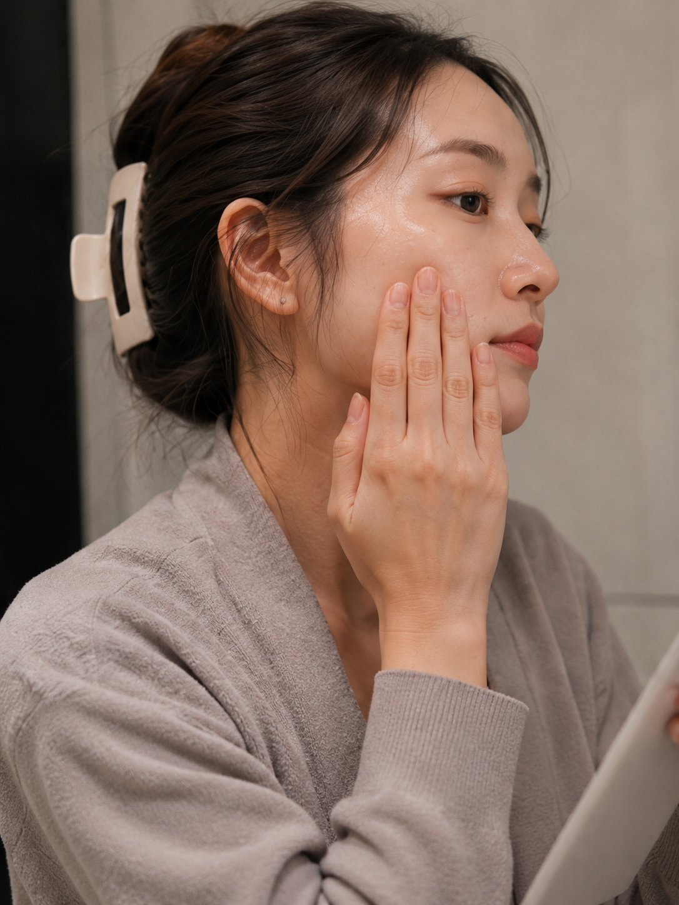
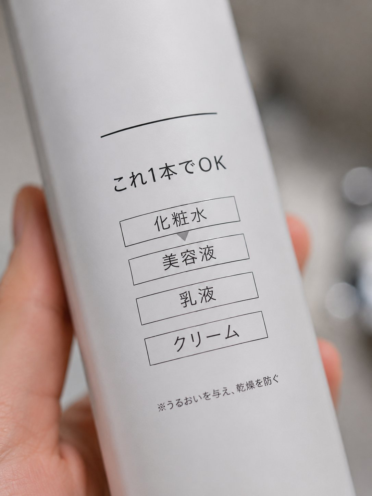
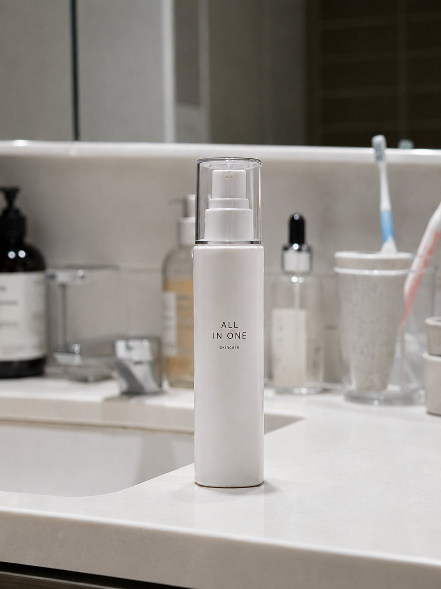
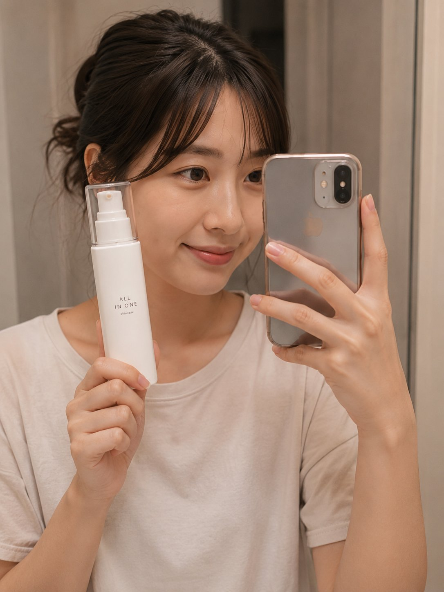

忙しくても、整える。
1本で完結するオールインワン美容液。
回数縛りなし・いつでも解約OK
化粧水・美容液・乳液・クリームの工程を、 たった1本に。ベタつかないから朝も使える。 忙しい日の「最低限」が、 続けられるケアになります。

疲れた夜はこれ1本。洗顔のあとにさっと。
朝の5分。最低限のケアで清潔感を整える。
スマホを見ながら、習慣のように。

工程を減らすことで、忙しい日でも「やった」と思える最低限のケアを実現。
朝の出勤前でも不快感なく使える、サラッとなじむ設計。

「時間があるとき」に使うのではなく、「時間がないとき」に使うための処方。
1本だから、面倒がない。だから続く。
朝の乾燥が気になりにくくなる。
完璧ではなく、最低限を毎日積み重ねる。
メイク前でも肌がカサついて見えにくい。
仕事前の「ちゃんとしてる」安心感へ。
洗顔後に何もしない罪悪感が減る。
正直、スキンケアって"やらなきゃ"って思うほど続かなくて…。 これは"1本でいい"って割り切れるから、むしろ続いてます。
ベタつくのが苦手なんですが、これは軽くて使いやすいです。 朝にサッと使えるのが助かります。
帰宅が遅い日は本当に助かってます。 "最低限これだけやればOK"って思えるのがラクです。
劇的に変わるというより、"ちゃんとしてる感"が出る感じ。 仕事前の安心感が違います。

完璧なスキンケアより、続けられる1本を。
回数縛りなし、いつでも解約OK。
初回 ¥1,980・回数縛りなし・いつでも解約OK